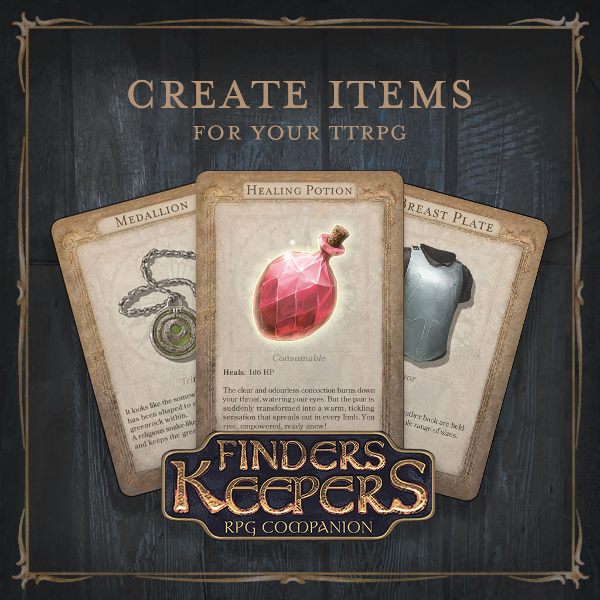
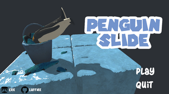
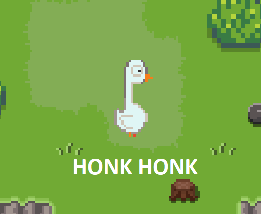
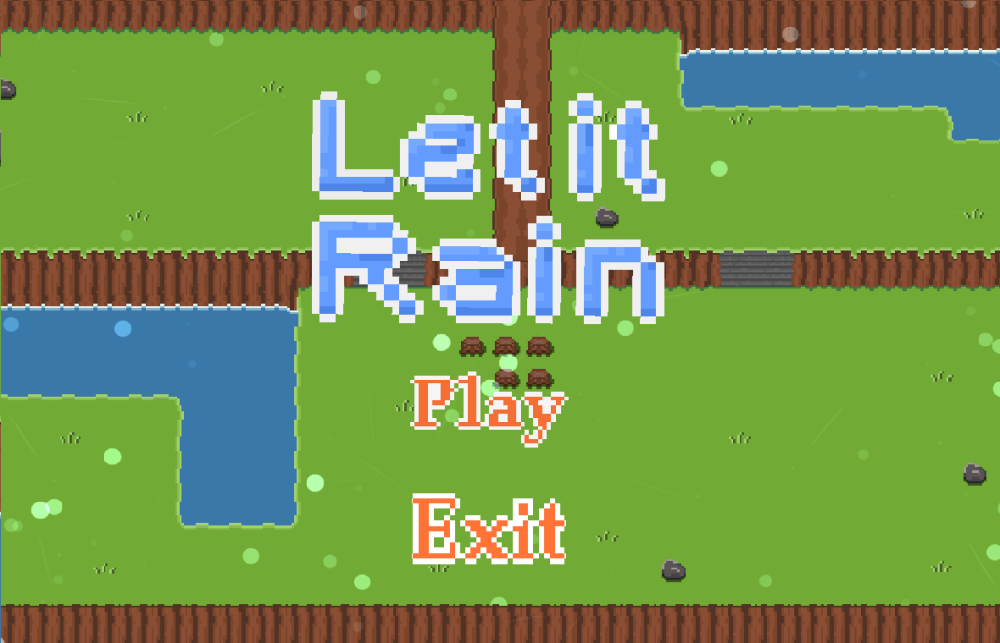
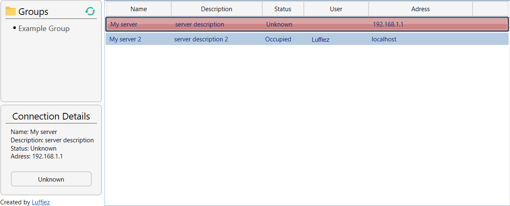
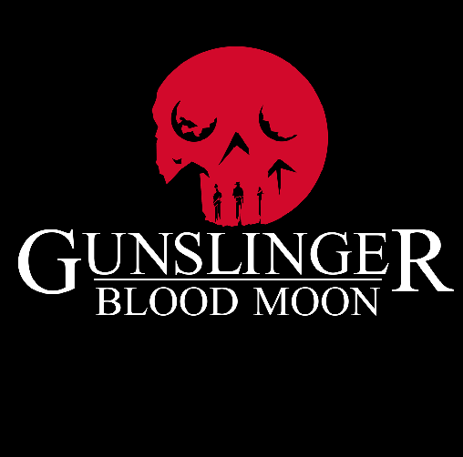
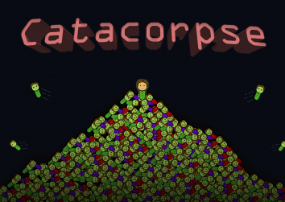
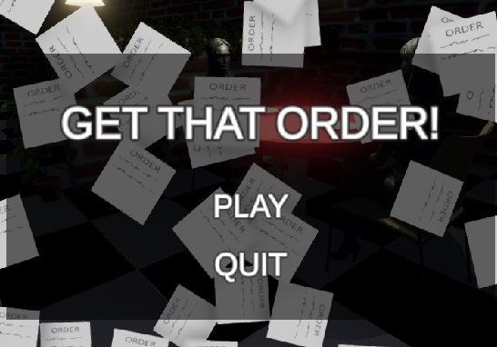

Erik Rodriguez
I'm a software- and video game developer. Most of my free time is spent with my two kids or playing/creating video games. The latest released project I've been part of is Jump King Quest, but I also participate in different game jams when I have some spare time.
Interested in what I've been up to? Check out my portfolio down below!


Duo contribution to Ludum Dare 53, with the theme 'Delivery'.

Duo contribution to Ludum Dare 51, with the theme 'Every 10 seconds'.

Duo contribution to Ludum Dare 50, with the theme 'Delay the inevitable'.

Solo contribution to Ludum Dare 48, with the theme 'Deeper and deeper'.

Helped develop the early stages of the unity app for android and iOS for about a year.

Penguin Slide is a quirky idea I got, so I created a prototype.
My participation of 2020’s Advent of Code, written in Python.
#AOC2020

Duo submission to the GMTK2020 Game Jam.
#GMTK2020

Duo submission to the Ludum Dare Jam.
#LudumDare46

A remote desktop managing application for windows. Created to help manage RDP-connections and to see the current status of a PC.

School project with larger group of students (~15), which lasted for 10 weeks.

My 5-man teams contribution to the 2018 Global Game Jam.
#GlobalGameJam18
My contribution to the Blackthornprod Game Jam.
#BTPGameJam

My first contribution to the Ludum Dare Jam.
#LudumDare40